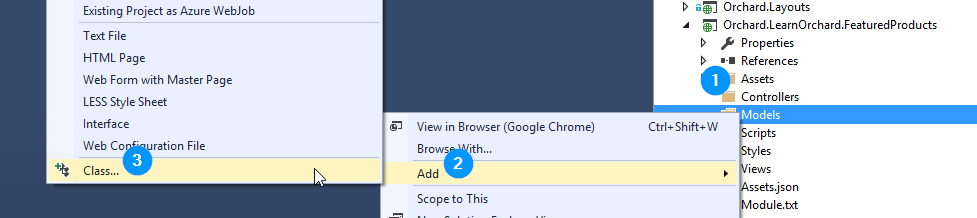
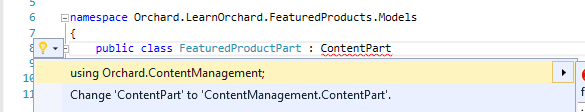
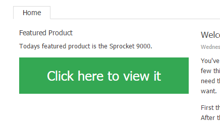

第1部分：构建静态小部件-Part 1: Build a Static Widget
Introduction
介绍
This four part course will get you started with a gentle introduction to extending Orchard at the code level. You will build a very simple module which contains a widget that shows an imaginary featured product.
这个由四部分组成的课程将为您提供在代码级别扩展Orchard的温和介绍。您将构建一个非常简单的模块，其中包含一个显示虚构特色产品的小部件。
It will teach you some of the basic components of module development and also encourage you to use best-practices when developing for Orchard.
它将教您模块开发的一些基本组件，并鼓励您在开发Orchard时使用最佳实践。
In this first part we are going to set up our dev environment, scaffold a module and then build a simple Widget inside it.
在第一部分中，我们将设置我们的开发环境，脚手架模块，然后在其中构建一个简单的“Widget”。
Prerequisites
先决条件
This course assumes the following:
本课程假设如下：
-
You have some experience using Orchard and understand its core concepts. Refreshers and links to related guides will be provided.
-
您有使用Orchard的经验并了解其核心概念。将提供相关指南的复习和链接。 *
-
You can read and write C# code.
-
您可以读写C＃代码。 *
-
You have some experience with ASP.NET MVC. This doesn't need to be deep but you should be aware of Razor templates, views, strongly-typed models and similar basics.
-
您对ASP.NET MVC有一些*经验。这不需要很深，但你应该知道Razor模板，视图，强类型模型和类似的基础知识。
The course was written and tested against Orchard v1.9.2. It should work in new 1.x branch releases as they come out.
该课程是针对Orchard v1.9.2编写和测试的。它应该在新的1.x分支版本中发布。
Getting help
获得帮助
If you get stuck or need some support at any point in the course there are several places you can turn:
如果您在课程中的任何一点遇到困难或需要一些支持，您可以转到几个地方：
- Post a question in the official support forums on CodePlex.
1.在[CodePlex官方支持论坛]上发布问题（http://orchard.codeplex.com/discussions）。
- Post a question on Stack Overflow tagged with OrchardCMS.
1.在[使用OrchardCMS标记的Stack Overflow]上发布问题（http://stackoverflow.com/questions/tagged/orchardcms）。
- Open an issue on the Orchard Doc GitHub repo.
1.在[Orchard Doc GitHub repo]（https://github.com/OrchardCMS/OrchardDoc/issues）上打开一个问题。
Setting up
配置
First things first. You need to follow the setting up for a lesson guide.
首先要做的事情。您需要按照[设置课程]（设置课程）指南进行操作。
This will take you through the initial steps to set up your dev environment and pull a fresh copy of the source code down. When you've completed it please use your back button to come back to this course.
这将指导您完成设置开发环境的初始步骤，并提取源代码的新副本。完成后，请使用后退按钮返回本课程。
Getting the most out of this course
充分利用这门课程
Writing an Orchard module that actually does something is going to contain a minimum of 9 different files. You will need to do a lot of development before you can run your module code and see it working in Orchard.
编写实际执行某项操作的Orchard模块将包含9个不同文件的最小。在运行模块代码并在Orchard中查看它之前，您需要进行大量的开发。
At first you might be overwhelmed by this, but here is a little tip; don't be. Just forge ahead with the tutorial and don't worry if terms like drivers, content parts, or placements seem unfamiliar at the moment. As you continue with your module development you will come across these files many times over. Before long you will start recognizing these core files and you will see how it all fits together.
起初你可能会对此不知所措，但这里有一点小小的提示;不要。刚刚开始使用本教程，如果目前看起来不熟悉驱动程序，内容部分或展示位置等术语，请不要担心。当您继续进行模块开发时，您会多次遇到这些文件。不久之后，您将开始识别这些核心文件，您将看到它们如何组合在一起。
Course structure
课程结构
Throughout the course we will alternate between discussing topics and implementing them. The discussion may contain example code or other example scenarios.
在整个课程中，我们将在讨论主题和实施主题之间进行交替。讨论可能包含示例代码或其他示例方案。
So that there is no confusion for you as to what you should be doing, when it comes to implementing these lessons into the module it will be explained step-by-step via numbered lists.
因此，对于您应该做什么没有任何困惑，在将这些课程实施到模块中时，将通过编号列表逐步解释。
Later on in the course, as the topics become more advanced, we may go through several sections of discussion before wrapping up the lessons into changes to the codebase.
在课程的后面，随着主题变得更加先进，我们可能会在将课程结束到代码库的更改之前进行几个部分的讨论。
You will also occasionally come across Bonus Exercise sections. These are completely optional. You can skip them, complete them at the time, or come back after completing the course to complete them. They are suggested when there is an extra feature you could implement using the skills you have just learned.
您偶尔也会遇到 Bonus Exercise 部分。这些是完全可选的。您可以跳过它们，在当时完成它们，或者在完成课程后返回以完成它们。当您使用刚刚学到的技能实现额外功能时，建议使用它们。
Getting started
入门
Now that you've completed all of the setup tasks you will have a fresh copy of Orchard configured and ready to go.
现在您已经完成了所有设置任务，您将获得Orchard的新副本，并准备好了。
The rest of this part of the course will walk you through the process required to scaffold an empty module and then build a simple Widget inside of it.
本课程的其余部分将引导您完成脚手架空模块所需的过程，然后在其中构建一个简单的“Widget”。
Command line scaffolding with Orchard.exe
使用Orchard.exe命令行脚手架
You should now be looking at Visual Studio. Down the side, in your Solution Explorer window you will see many files and folders.
您现在应该关注Visual Studio。在您的 Solution Explorer 窗口中，您将看到许多文件和文件夹。
The first step to take is to collapse all of the projects down. Its a long list and we need to be able to see an overview of the solution so we can start working with it. You don't need to collapse these individually by hand however:
要采取的第一步是将所有项目崩溃。它是一个很长的列表，我们需要能够看到解决方案的概述，以便我们开始使用它。但是，您不需要手动单独折叠它们：
- If your Solution Explorer window is not visible click View, Solution Explorer.
1.如果看不到您的Solution Explorer窗口，请单击 View ， Solution Explorer 。
- Click the Collapse All icon in the toolbar along the top of the solution explorer. It looks like this:
1.单击解决方案资源管理器顶部工具栏中的折叠全部图标。它看起来像这样：

If you expand your Modules folder you will see a long list of the modules which come packaged with Orchard:
如果您展开Modules文件夹，您将看到与Orchard一起打包的一长串模块列表：

There is a utility that is packaged with each copy of Orchard which will let us add our own module into this list. It is called orchard.exe. This is a command line utility which will scaffold up a new empty module and add it to the main solution. There are also other commands you can use with this utility.
每个Orchard副本都有一个实用程序，它允许我们将自己的模块添加到此列表中。它被称为orchard.exe。这是一个命令行实用程序，它将构建一个新的空模块并将其添加到主解决方案中。您还可以使用此实用程序的其他命令。
To scaffold a new module:
要构建一个新模块：
- Press the Save All button (or press
Ctrl-Shift-S). It's a good practice to always save before using the command line utility. Many of its commands will make changes to your solution and if you have unsaved changes you will get merge conflicts.
1.按 Save All 按钮（或按Ctrl-Shift-S）。在使用命令行实用程序之前始终保存是一种很好的做法。它的许多命令都会对您的解决方案进行更改，如果您有未保存的更改，您将收到合并冲突。
- In the Solution Explorer, scroll down to the
Orchard.Webproject. It should be the very last project in the solution.
1.在Solution Explorer中，向下滚动到Orchard.Web项目。它应该是解决方案中的最后一个项目。
- Right click on the
Orchard.Webproject and choose Open Folder in File Explorer:
1.右键单击Orchard.Web项目，然后在文件资源管理器中选择打开文件夹：

- Open the
binfolder
1.打开bin文件夹
- Locate
orchard.exein the list and double click it to open.
1.在列表中找到orchard.exe并双击它以打开。

> **Note:** If you don't see `orchard.exe` in the `bin` folder then you didn't follow the steps in the [setting up for a lesson](Setting-up-for-a-lesson) guide. You need to have built the solution at least once for this file to exist. Press `Ctrl-Shift-B` within Visual Studio to build the solution.
- After a short pause while it loads you will then be presented with the Orchard command line:
1.在加载后短暂停顿后，您将看到Orchard命令行：

> **Note:** There is a separate article where you can [learn more about orchard.exe and its features](Using-the-command-line-interface). You don't need to read it to understand this course but it will be useful to review in the future as part of your overall training.
- Type the following command:
feature enable Orchard.CodeGenerationand pressenter.
1.键入以下命令：feature enable Orchard.CodeGeneration并按enter。

This will activate the code generation features of `orchard.exe`.
> **Note:** If you get an error saying '_No command found matching arguments "feature enable Orchard.CodeGeneration"_' then you didn't follow the steps in the [setting up for a lesson](Setting-up-for-a-lesson) guide. You need to run the solution and go through the Orchard Setup screens before this command is available.
The code generation command that we will be using is `codegen module`.
- Type
help codegen moduleand press enter to see the syntax for this command. To see details about all of the commands available typehelp commands.
1.键入help codegen module并按Enter键以查看此命令的语法。要查看有关所有可用命令的详细信息，请键入“help commands”。
Like the rest of Orchard CMS, the `orchard.exe` command shell is extendable. The total number of commands available can vary depending on what features / modules you have loaded. In a future tutorial we will look at extending `orchard.exe` with our own commands.
- Scaffold the module by entering the following command:
codegen module Orchard.LearnOrchard.FeaturedProduct.
1.通过输入以下命令来支持模块：codegen module Orchard.LearnOrchard.FeaturedProduct。
If you read the help in the last step you might be wondering why we didn't include the `/IncludeInSolution:true` argument. This defaults to true so you don't need to add it.
- Close the Orchard command-line window.
1.关闭Orchard命令行窗口。
- This has now created a new, empty module in the file system. Switching back to Visual Studio should show you the File Modification Detected dialog:
这已经在文件系统中创建了一个新的空模块。切换回Visual Studio应该会显示 File Modification Detected 对话框：

Click **Reload**.
> **Note:** If you had unsaved changes in your Solution file then click the **Dismiss** option and add the project manually. In the Solution Explorer, _Right click_ on the `Modules` folder. Choose **Add**, **Existing Project**, then navigate to `.\src\Orchard.Web\Modules\Orchard.LearnOrchard.FeaturedProduct\`, select `Orchard.LearnOrchard.FeaturedProduct.csproj` and press **Open**.
The basic framework for a module now exists inside the modules section of your solution:
模块的基本框架现在存在于解决方案的模块部分中：

Core concepts refresher
核心概念复习
If you are at the stage of wanting to build modules for Orchard then you should already be familiar with the concept of Content Types, Widgets, Content Items and Content Parts. These are all things that you can manage via the admin dashboard and you will have worked with them if you have built any kind of site in Orchard. To refresh your memory:
如果您正处于想要为Orchard构建模块的阶段，那么您应该已经熟悉内容类型，窗口小部件，内容项和内容部件的概念。这些都是您可以通过管理仪表板管理的内容，如果您在Orchard中构建了任何类型的站点，您将使用它们。要刷新你的记忆：
-
Content Type: The template for a type of content in Orchard. The most common example is the
Pagecontent type which provides the structure for a page of content in an Orchard site. -
内容类型：Orchard中某种内容的模板。最常见的示例是
Page内容类型，它为Orchard站点中的内容页提供结构。
-
Widgets: You can also make a content type that works as a
Widget. TheWidgetis a special variation of content type which can be placed into one of the manyZonesa template defines. It's manageable via the admin dashboard at run-time. Content types can opt-in to this system by configuring theirStereotypesetting toWidget. -
小部件：您还可以创建一个用作“小部件”的内容类型。 “Widget”是内容类型的一种特殊变体，可以放置在模板定义的众多“区域”之一中。它可以在运行时通过管理仪表板进行管理。内容类型可以通过将其“Stereotype”设置配置为“Widget”来选择加入此系统。
-
Content Item: This is an instance of a specific content type. When you create a new
Pagein Orchard and fill it with content, you have created a Content Item with a Content Type ofPage. -
内容项：这是特定内容类型的实例。当你在Orchard中创建一个新的
Page并用内容填充它时，你创建了一个_Content Item_，其_Content Type_为Page。
-
Content Part: A small module providing some specific functionality. The Content Type is made up by attaching various Content Parts to it. For example you could have a comments content part. It just manages a block of comments for whatever it is attached to. The same comments content part could be attached to a
Pagecontent type, aBlogcontent type, or within aWidget. -
内容部分：提供某些特定功能的小模块。 _Content Type_由将各种_Content Parts_附加到它组成。例如，您可以拥有_comments_内容部分。它只是管理一个评论块，无论它附加到什么。相同的评论内容部分可以附加到“Page”内容类型，“Blog”内容类型或“Widget”内。
What we will be building
我们将要建设什么
As you might have guessed from the module name, we are going to build a very simple featured product module. This first step into extending Orchard will be a small one.
正如您可能从模块名称中猜到的那样，我们将构建一个非常简单的特色产品模块。扩展Orchard的第一步将是一个小步骤。
The featured product module will be a Widget which shows a static message listing the featured product with a link to that page. It's not going to have any configurable settings behind it so we won't need to look at the database side of things yet. It's not going to be powered by an actual product system. A Widget is a great starting point because it doesn't need to worry about menu settings, titles, URLs or integration into the admin dashboard.
特色产品模块将是一个“Widget”，它显示一个静态消息，列出特色产品以及该页面的链接。它背后不会有任何可配置的设置，所以我们不需要查看数据库方面的事情。它不会由实际的产品系统提供动力。 “Widget”是一个很好的起点，因为它不需要担心菜单设置，标题，URL或集成到管理仪表板中。
It will be a simple banner which you can display on your site by adding a widget via the admin dashboard. This will be enough to show the core concepts of a module. We will come back and make improvements in the next three parts of this course.
它将是一个简单的横幅，您可以通过管理仪表板添加小部件来在您的网站上显示。这足以显示模块的核心概念。我们将在本课程的后三部分回过头来进行改进。
Let's get started with some development by adding classes and other files to our module.
让我们通过向我们的模块添加类和其他文件来开始一些开发。
Content part
内容部分
The content part class is the core data structure. When you scaffolded the module it automatically made you a Models folder. Now we need to add the FeaturedProductPart class to this folder:
内容部分类是核心数据结构。当你对模块进行搭建时，它会自动为你创建一个Models文件夹。现在我们需要将FeaturedProductPart类添加到此文件夹：

- Right click on the
Modelsfolder.
1. 右键单击Models文件夹上的。
- Choose Add
1.选择添加
- Choose Class...
1.选择班级......
- In the Name: field type
FeaturedProductPart
1.在 Name：字段中输入FeaturedProductPart
- Click Add
1.单击添加
Your new class will be created and opened up in the Visual Studio editor.
您的新类将在Visual Studio编辑器中创建和打开。
Important note: In order for Orchard to recognize Content Part classes they must be in a namespace ending in
.Models.重要说明：为了让Orchard识别内容部分类，它们必须位于以。。“模型”结尾的命名空间中。
Because you already added this class within the
Modelsfolder the namespace is automatically wrapped around your class. In the future, when you're making your own classes don't forget to ensure that you follow this namespace structure.因为您已经在
Models文件夹中添加了这个类，所以命名空间会自动包装在您的类中。将来，当您创建自己的类时，不要忘记确保遵循此命名空间结构。
Your content part class will need to derive from the ContentPart class.
您的内容部分类需要从ContentPart类派生。
Normally we would add public properties to store all the related data but as we are keeping it simple this first example won't have any.
通常我们会添加公共属性来存储所有相关数据，但是由于我们保持简单，因此第一个示例将不具有任何相关数据。

Add the ContentPart inheritance by following these steps:
按照以下步骤添加ContentPart继承：
- Type
: ContentPartafter yourFeaturedProductPartclass definition to inherit from theContentPartclass.
1.在FeaturedProductPart类定义之后键入：ContentPart以继承ContentPart类。
- Wait a second and the red squiggles will appear underneath the class. Add the namespace by pressing
Ctrl-.on your keyboard to bring up the Quick Actions menu.
等一下，课堂下面会出现红色曲线。按键盘上的“Ctrl-。”添加命名空间以显示“快速操作”菜单。
- Select the
using Orchard.ContentManagement;option and pressenter.
1.选择using Orchard.ContentManagement;选项并按enter。
That's all you need to do for your first ContentPart class. Your FeaturedProductPart.cs file should now look like this:
这就是你需要为你的第一个ContentPart课做的所有事情。您的FeaturedProductPart.cs文件现在应该如下所示：
using Orchard.ContentManagement;
namespace Orchard.LearnOrchard.FeaturedProduct.Models {
public class FeaturedProductPart : ContentPart {
}
}
Data migrations
数据迁移
When your module is enabled in the admin dashboard, Orchard will execute a data migration process. The purpose of the data migration is to register a list of the features contained in the module and any data it uses.
在管理仪表板中启用模块后，Orchard将执行数据迁移过程。数据迁移的目的是注册模块中包含的功能列表及其使用的任何数据。
We aren't going to use this yet, but the migration is also used for upgrades. As you work on your modules you will want to add and remove bits. The data migration class can make changes and you can transform your existing data to meet your new requirements.
我们暂时不会使用它，但迁移也用于升级。在处理模块时，您需要添加和删除位。数据迁移类可以进行更改，您可以转换现有数据以满足新要求。
The data migration class can be created by hand, following a similar process as the last section but we can also scaffold it with the orchard.exe command line. Let's dive back in to the command line and add a data migration class to the module.
数据迁移类可以手动创建，遵循与上一节类似的过程，但我们也可以使用orchard.exe命令行来构建它。让我们回到命令行并向模块添加数据迁移类。
- Press the Save All button (or press
Ctrl-Shift-S). Its a good practice to always save before using the command line utility. Many of its commands will make changes to your solution and if you have unsaved changes you will get merge conflicts.
1.按 Save All 按钮（或按Ctrl-Shift-S）。在使用命令行实用程序之前始终保存是一种很好的做法。它的许多命令都会对您的解决方案进行更改，如果您有未保存的更改，您将收到合并冲突。
- In the Solution Explorer, scroll down to the
Orchard.Webproject. It should be the very last project in the solution.
1.在Solution Explorer中，向下滚动到Orchard.Web项目。它应该是解决方案中的最后一个项目。
- Right click on the
Orchard.Webproject and choose Open Folder in File Explorer:
1.右键单击Orchard.Web项目，然后在文件资源管理器中选择打开文件夹：

- Open the
binfolder.
1.打开bin文件夹。
- Locate
orchard.exein the list and double click it to open.
1.在列表中找到orchard.exe并双击它以打开。

- After a short pause while it loads you will then be presented with the Orchard command line:
1.在加载后短暂停顿后，您将看到Orchard命令行：

- We enabled the code generation feature when scaffolding the module but if you have been playing with Orchard or are just using this guide as a reference it can't hurt to run the command a second time to make sure.
1.我们在脚手架模块时启用了代码生成功能，但是如果你一直在玩Orchard或者只是使用这个指南作为参考，那么第二次运行命令就可以了。
Type the following command: `feature enable Orchard.CodeGeneration` and press `enter`.

This will activate the code generation features of `orchard.exe`. The command that we will be using is `codegen datamigration`.
- Type
help codegen datamigrationand press enter to see the syntax for this command. To see details about all of the commands available typehelp commands.
1.键入help codegen datamigration并按Enter键以查看此命令的语法。要查看有关所有可用命令的详细信息，请键入“help commands”。
Like the rest of Orchard CMS, the `orchard.exe` command shell is extendable. The total number of commands available can vary depending on what features / modules you have loaded. In a future tutorial we will look at extending `orchard.exe` with our own commands.
- Scaffold the data migration class by entering the following command:
codegen datamigration Orchard.LearnOrchard.FeaturedProduct.
1.通过输入以下命令来支持数据迁移类：codegen datamigration Orchard.LearnOrchard.FeaturedProduct。
- Close the Orchard command-line window.
1.关闭Orchard命令行窗口。
- This has now created a new data migration the file system called
Migrations.cs. It will be in the root folder of your module.
这已经创建了一个名为Migrations.cs的文件系统的新数据迁移。它将位于模块的根文件夹中。
Switching back to Visual Studio should show you the **File Modification Detected** dialog:

Click **Reload**.
> **Note:** If you had unsaved changes in your Solution file then click the **Dismiss** option and add the class manually. In the Solution Explorer, _right click_ on the `Orchard.LearnOrchard.FeaturedProduct` folder. Choose **Add**, **Existing Item**, then navigate to `.\src\Orchard.Web\Modules\Orchard.LearnOrchard.FeaturedProduct\`, select `Migrations.cs` and press **Add**.
Now you have a Migrations.cs file in the root folder of your module's project. By default it has an empty method called Create() which returns an int. For the moment, returning a value of 1 is fine. It's the version number of your data migration and we will look into it in more detail later in this course.
现在，您在模块项目的根文件夹中有一个Migrations.cs文件。默认情况下，它有一个名为Create（）的空方法，它返回一个int。目前，返回值“1”是好的。这是您的数据迁移的版本号，我们将在本课程的后面更详细地介绍它。
As discussed earlier, the Widget is just a ContentType with a Stereotype of Widget. A ContentType is basically just a collection of ContentParts. Every ContentType should contain the CommonPart which gives you the basics like the owner and date created fields. We will also add the WidgetPart so it knows how to widget. Finally we also include the content part we are building, FeaturedProductPart.
如前所述，Widget只是一个带有Widget的'Stereotype的ContentType。ContentType基本上只是ContentParts的集合。每个ContentType都应包含CommonPart，它为您提供所有者和日期创建字段等基础知识。我们还将添加WidgetPart，以便它知道如何构建小部件。最后，我们还包括我们正在构建的内容部分，FeaturedProductPart`。
Let's update the Create() method to implement these plans:
让我们更新Create（）方法来实现这些计划：
- Open
Migrations.csfrom within your module project if you don't already have it open.
1.如果尚未打开，请从模块项目中打开Migrations.cs。
- Replace the
Create()method with the following:
1.用以下代码替换Create（）方法：
public int Create() {
ContentDefinitionManager.AlterTypeDefinition(
"FeaturedProductWidget", cfg => cfg
.WithSetting("Stereotype", "Widget")
.WithPart(typeof(FeaturedProductPart).Name)
.WithPart(typeof(CommonPart).Name)
.WithPart(typeof(WidgetPart).Name));
return 1;
}
Orchard doesn't have a `CreateTypeDefinition` method so even within the create we still used `AlterTypeDefinition`. If it doesn't find an existing definition then it will create a new content type.
<font color=#0099ff size=4 face="黑体"></font>
- Press
Ctrl-.on the red squiggles underFeaturedProductPartandCommonPartthen let Visual Studio add the requiredusingstatements.
1.在“FeaturedProductPart”和“CommonPart”下的红色曲线上按“Ctrl-。”，然后让Visual Studio添加所需的using语句。
<font color=#0099ff size=4 face="黑体"></font>
- Try the same under the
WidgetPart- you will see Visual Studio doesn't understand where to point theusingstatement at and it only offers you options to generate stubs. We don't want this.
1.在“WidgetPart”下尝试相同的操作 - 您将看到Visual Studio不知道在哪里指向using语句，它只提供生成存根的选项。我们不希望这样。

<font color=#0099ff size=4 face="黑体"></font>
- Right click on your References and choose Add Reference...
1. _右键单击参考并选择添加参考...
<font color=#0099ff size=4 face="黑体"></font>

- Click the Projects tab on the left. Scroll down until you can see
Orchard.Widgetsin the list. Hover your mouse over it and a checkbox will appear. Click the checkbox forOrchard.Widgets. Click OK.
1.单击左侧的 Projects 选项卡。向下滚动，直到您可以在列表中看到“Orchard.Widgets”。 _Hover_将鼠标悬停在它上面，会出现一个复选框。单击“Orchard.Widgets”的复选框。单击确定。

- Now you can try resolving the red squiggly lines under
WidgetPartagain:
1.现在你可以尝试再次解决WidgetPart下的红色波浪线：

You will now have the correct `using Orchard.Widgets.Models` option presented to you. Select it.
- Save your progress so far by clicking the Save all button (or press
Ctrl-Shift-S).
1.单击 Save all 按钮（或按Ctrl-Shift-S）保存到目前为止的进度。
That's all for the data migration, your Migrations.cs should now look like this:
这就是数据迁移的全部内容，您的Migrations.cs现在应该如下所示：
using Orchard.ContentManagement.MetaData;
using Orchard.Core.Common.Models;
using Orchard.Data.Migration;
using Orchard.LearnOrchard.FeaturedProduct.Models;
using Orchard.Widgets.Models;
namespace Orchard.LearnOrchard.FeaturedProduct {
public class Migrations : DataMigrationImpl {
public int Create() {
ContentDefinitionManager.AlterTypeDefinition(
"FeaturedProductWidget", cfg => cfg
.WithSetting("Stereotype", "Widget")
.WithPart(typeof(FeaturedProductPart).Name)
.WithPart(typeof(CommonPart).Name)
.WithPart(typeof(WidgetPart).Name));
return 1;
}
}
}
Update dependencies as you go along
随着时间的推移更新依赖关系
In the Create() method of the data migration we introduced a dependency on WidgetPart.
在数据迁移的Create（）方法中，我们引入了对'WidgetPart`的依赖。
This means that our module won't run without the Orchard.Widgets module being installed and enabled within the system.
这意味着如果没有在系统中安装和启用Orchard.Widgets模块，我们的模块将无法运行。
In order to let Orchard know that we have this dependency we need to record it in a manifest file called Module.txt. This is a text file written in YAML format which stores meta information about the module like the name, author, description and dependencies on other modules. If you haven't heard of YAML before don't worry, it is a simple format to understand.
为了让Orchard知道我们有这种依赖，我们需要将它记录在名为Module.txt的清单文件中。这是一个以YAML格式编写的文本文件，它存储有关模块的元信息，如名称，作者，描述和其他模块的依赖关系。如果您还没有听说过YAML，请不要担心，这是一种易于理解的简单格式。
We will look at the Module.txt manifest file again in more detail in part 4 of this course, for now we just need to go in and record the dependency we have created with Orchard.Widgets.
我们将在本课程的第4部分中更详细地再次查看Module.txt清单文件，现在我们只需要进入并记录我们用Orchard.Widgets创建的依赖关系。
It is important to record this information as soon as we make a dependency on a module. If we don't record the information then your module can cause exceptions for your users at run-time. You really need to get into the habit of doing it straight away, because not only are they are easy to forget but if you have the module that you depend on already enabled you won't see any errors but your users will.
一旦我们依赖于模块，记录这些信息就很重要。如果我们不记录信息，那么您的模块可能会在运行时导致用户出现异常。你真的需要养成直接做的习惯，因为它们不仅容易忘记，而且如果你已经启用了你所依赖的模块，你将看不到任何错误，但你的用户会。
Lets update the manifest now to include the Orchard.Widgets dependency:
让我们现在更新清单，以包含Orchard.Widgets依赖：
- In the solution explorer, open up
Module.txtwhich will be located in the root folder of the module.
1.在解决方案资源管理器中，打开Module.txt，它将位于模块的根文件夹中。
- The last three lines describe the main feature of the module (we have only one feature in this module):
1.最后三行描述了模块的主要特征（我们在这个模块中只有一个特性）：
Features:
Orchard.LearnOrchard.FeaturedProduct:
Description: Description for feature Orchard.LearnOrchard.FeaturedProduct.
Add an extra row underneath `Description:` and add a `Dependencies:` entry like this:
Features:
Orchard.LearnOrchard.FeaturedProduct:
Description: Description for feature Orchard.LearnOrchard.FeaturedProduct.
Dependencies: Orchard.Widgets
The indentation is important as it creates hierarchy within a YAML document. Indent the line with 8 spaces.
How is all this magic working?
这一切的神奇是如何运作的？
So far the ContentPart class has been magically detected as long as it uses the .Model namespace, now the data migration is automatically detected just for deriving from DataMigrationImpl. How is all of this happening?
到目前为止，只要使用.Model命名空间就可以神奇地检测到ContentPart类，现在自动检测数据迁移只是为了从DataMigrationImpl派生。这一切是如何发生的？
Under the hood Orchard uses Autofac, an Inversion of Control container. If you're interested you can learn about how it's integrated in the how Orchard works guide.
在引擎盖下，Orchard使用[Autofac]（http://autofac.org/），一个Inversion of Control容器。如果您有兴趣，可以了解它如何整合到[Orchard如何工作]（How-Orchard-works）指南中。
Don't worry though, you don't really need to know anything deeper about it other than it's in the background and it automatically scans & registers your components for you.
不过不用担心，除了它在后台之外，你真的不需要知道任何更深入的内容，它会自动扫描并注册你的组件。
Later on we will use Autofac's dependency injection which let us automatically get instances of things we need supplied directly into our classes.
稍后我们将使用Autofac的依赖注入，它让我们自动将我们需要的东西实例直接提供给我们的类。
Content part driver
内容部分驱动程序
Everything you see in Orchard is composed from Shapes. If you don't know about shapes you can learn more about them in the accessing and rendering shapes guide.
你在乌节看到的一切都是由“形状”组成的。如果您不了解形状，可以在[访问和渲染形状]（访问和渲染形状）指南中了解有关它们的更多信息。
A content part driver is a class that composes the shapes that should be used to view and edit content parts. Drivers live in their own folder called Drivers. A basic driver class will contain three methods: a display driver for viewing a content part in the front end, an editor driver for presenting an editor form in the admin dashboard and an update method to handle changes submitted from the editor form.
内容部件驱动程序是组成应该用于查看和编辑内容部件的形状的类。驱动程序位于名为Drivers的文件夹中。基本驱动程序类将包含三个方法：用于查看前端内容部分的_display_驱动程序，用于在管理仪表板中显示编辑器表单的_editor_驱动程序以及用于处理从编辑器表单提交的更改的_update_方法。
As the shapes are created in the driver you can also pass data through to a view. Views are discussed in the next section but first we need to wire in the plumbing.
在驱动程序中创建形状时，您还可以将数据传递到视图。视图将在下一节中讨论，但首先我们需要连接管道。
The widget that we are building has no configuration, so all this driver will need is the Display method configuring. The other methods will be added in when we revisit the widget it part two.
我们正在构建的小部件没有配置，所以这个驱动程序需要的是Display方法配置。当我们重新访问第二部分的小部件时，将添加其他方法。
There aren't any command line scaffolding commands for setting up new drivers so you will need to create it manually:
没有用于设置新驱动程序的命令行脚手架命令，因此您需要手动创建它：
- Make a new
Driversfolder (Right click on the module project in the solution explorer, click Add, New Folder)
1.创建一个新的Drivers文件夹（_右键单击解决方案资源管理器中的模块项目，单击添加，新建文件夹）
- Add a new class called
FeaturedProductDriverby right clicking theDriversfolder, clicking Add, Class... and typingFeaturedProductDriverfor the name (Visual Studio will automatically add the.cson to the end for you)
1.右键单击Drivers文件夹，单击 Add ， Class ... 并输入FeaturedProductDriver作为名称，添加一个名为FeaturedProductDriver的新类（Visual Studio将自动添加.cs到最后为你）

- Extend the class so it derives from
ContentPartDriver<FeaturedProductPart>(note that the generic type class ends in Part not Driver).
1.扩展类，使其派生自ContentPartDriver <FeaturedProductPart>（注意泛型类在Part not Driver中结束）。
- Add the missing namespaces using the
Ctrl-.shortcut.
1.使用Ctrl-.快捷方式添加缺少的命名空间。
In the future we will do a lot with the driver class and the way that it builds its display but for this simple example all we need is a simple class to wire the shape to a view.
在未来，我们将对驱动程序类及其构建显示的方式做很多工作，但是对于这个简单的示例，我们只需要一个简单的类来将形状连接到视图。
-
Inside your
FeaturedProductDriverclass add this single method:1.在您的
FeaturedProductDriver类中添加以下单个方法：protected override DriverResult Display(FeaturedProductPart part, string displayType, dynamic shapeHelper) { return ContentShape("Parts_FeaturedProduct", () => shapeHelper.Parts_FeaturedProduct()); }
This says that when displaying the FeaturedProductPart return a shape called Parts_FeaturedProduct. By default Orchard will look for this shape in Views\Parts\FeaturedProduct.cshtml which is what we will build next.
这表示当显示FeaturedProductPart时，返回一个名为Parts_FeaturedProduct的形状。默认情况下，Orchard会在Views \\ Parts \\ FeaturedProduct.cshtml中查找这个形状，这是我们接下来要构建的。
Your FeaturedProductDriver.cs file should now look like this:
您的FeaturedProductDriver.cs文件现在应该如下所示：
using Orchard.ContentManagement.Drivers;
using Orchard.LearnOrchard.FeaturedProduct.Models;
namespace Orchard.LearnOrchard.FeaturedProduct.Drivers {
public class FeaturedProductDriver : ContentPartDriver<FeaturedProductPart> {
protected override DriverResult Display(FeaturedProductPart part,
string displayType, dynamic shapeHelper) {
return ContentShape("Parts_FeaturedProduct", () =>
shapeHelper.Parts_FeaturedProduct());
}
}
}
View
视图
Orchard uses Razor template views to display it's shapes. You can supply strongly-typed data models and use many of the normal ASP.NET MVC Razor view features within Orchard.
Orchard使用Razor模板视图来显示它的形状。您可以提供强类型数据模型，并使用Orchard中的许多常规ASP.NET MVC Razor视图功能。
For this first widget our needs are simple and we will only be putting plain HTML markup inside the .cshtml file:
对于第一个小部件，我们的需求很简单，我们只会在.cshtml文件中放置纯HTML标记：
- Add a new folder inside the
Viewsfolder calledParts(Right click on theViewfolder in the solution explorer, click Add, New Folder and typeParts).
1.在Views文件夹中添加一个名为Parts的新文件夹（_Right click_在解决方案资源管理器中的View文件夹上，单击添加，新文件夹并键入Parts）。
- Add a new
.cshtmlRazor view within thePartsfolder calledFeaturedProduct.cshtml
1.在Parts文件夹中添加一个名为FeaturedProduct.cshtml的新``.cshtml Razor视图。
- Within the
FeaturedProduct.cshtmlview file add the following HTML markup:
1.在FeaturedProduct.cshtml视图文件中添加以下HTML标记：
<style>
.btn-green {
padding: 1em;
text-align: center;
color: #fff;
background-color: #34A853;
font-size: 2em;
display: block;
}
</style>
<p>Today's featured product is the Sprocket 9000.</p>
<p><a href="~/sprocket-9000" class="btn-green">Click here to view it.</a></p>
Placement
放置
Almost all of the key elements are in place now except for this last one. The configuration inside a driver class tells Orchard how to render that content part. Content parts always exist within a larger composite content item. Placement is used to tell Orchard where to render these components.
现在几乎所有的关键元素都已到位，除了最后一个。驱动程序类内的配置告诉Orchard 如何呈现该内容部分。内容部分始终存在于较大的复合内容项中。 Placement用于告诉Orchard * where *以呈现这些组件。
The Placement.info file goes in the root folder of the module. It is an XML file with a simple structure. You can learn more about the Placement.info file in the understanding placement.info guide.
Placement.info文件放在模块的根文件夹中。它是一个结构简单的XML文件。您可以在[了解placement.info]（Understanding-placement-info）指南中了解有关Placement.info文件的更多信息。
Add the Placement.info file to your module:
将Placement.info文件添加到您的模块：
- Right click on the module project in the solution explorer.
1. _右键单击解决方案资源管理器中的模块项目。
- Choose Add, New Item to get to the add item screen:
1.选择添加，新项以进入添加项目屏幕：

- From the templates categories in the left hand side, choose General
1.从左侧的模板类别中，选择常规
- Find Text File in the list
1.在列表中找到文本文件
- Enter
Placement.infoin the Name: field.
1.在 Name：字段中输入Placement.info。
- Click OK
1.单击确定
This module has a single shape so we need to set up a <Place> for that shape.
该模块具有单一形状，因此我们需要为该形状设置“
- Add this snippet to the empty
Placement.infofile:
1.将此代码段添加到空的“Placement.info”文件中：
<Placement>
<Place Parts_FeaturedProduct="Content:1"/>
</Placement>
The Content:1 is the zone and priority of that shape. A shape will have several zones defined for it. Typically these include the header, content, meta and footer but they can have any combination of zones defined. In this case the Content is the main content area.
Content：1是该形状的区域和优先级。形状将为其定义多个区域。通常，这些包括标题，内容，元和页脚，但它们可以定义任何区域组合。在这种情况下，“内容”是主要内容区域。
The priority means that it will be near the top of the content zone. In more complicated modules there could be several shapes. Setting different priorities will let you organize their display order when you want them to be in the same zone. For example, if another shape had a place of Content:0.5 it would go before it, and Content:15 would go after it.
优先级意味着它将位于内容区域的顶部附近。在更复杂的模块中，可能有几种形状。设置不同的优先级将允许您在希望它们位于同一区域时组织其显示顺序。例如，如果另一个形状有一个“内容：0.5”的位置，它将在它之前，并且“内容：15”将在它之后。
Theme developers can customize these layout preferences by providing their own Placement.info and overriding your initial configuration. This lets theme authors customize your module without having to make changes to the actual code. This means when the module is upgraded to a new version the theme developers' changes will not be overwritten.
主题开发人员可以通过提供他们自己的Placement.info并覆盖您的初始配置来自定义这些布局首选项。这使得主题作者可以自定义您的模块，而无需更改实际代码。这意味着当模块升级到新版本时，主题开发人员的更改不会被覆盖。
Trying the module out in Orchard
在Orchard尝试模块
Congratulations, you've made it to the pay off, using the module in Orchard!
恭喜，您已经使用Orchard中的模块获得了回报！
The last few steps will enable the module in Orchard and assign the widget to a zone in the active template:
最后几个步骤将启用Orchard中的模块，并将窗口小部件分配给活动模板中的区域：
- In Visual Studio, press
Ctrl-F5to start the dev server without debugging mode enabled.
1.在Visual Studio中，按“Ctrl-F5”以启动开发服务器而不启用调试模式。
- Log in to the admin dashboard. The login link will be in the footer of the site.
1.登录管理仪表板。登录链接将位于站点的页脚中。
- Click
Modulesin the navigation menu.
1.单击导航菜单中的“模块”。
- The first item in the list should be our module,
Orchard.LearnOrchard.FeaturedProduct:
1.列表中的第一项应该是我们的模块，Orchard.LearnOrchard.FeaturedProduct：

Click **Enable** to activate the plugin:

- You can now add the Widget to a layer in the site. Click Widgets from the navigation menu.
1.您现在可以将Widget添加到站点中的图层。单击导航菜单中的小部件。
<font color=#0099ff size=4 face="黑体"></font>
- In the
AsideFirstsection of the Widgets page click the Add button:
1.在Widgets页面的AsideFirst部分中，单击 Add 按钮：
<font color=#0099ff size=4 face="黑体"></font>

- The
Featured Product Widgetwill be in the list, click the item to select it:
1.“特色产品小工具”将出现在列表中，单击该项目将其选中：

- You can leave most of the
Widgetsettings on their defaults. Just set theTitletoFeatured Product:
1.您可以将大多数Widget设置保留为默认值。只需将Title设置为Featured Product：

- Click Save at the bottom of the page.
1.单击页面底部的保存。
If you go back to the main site now you will see the module in the site:
如果您现在返回主站点，您将在站点中看到该模块：

We haven't created a page for the Sprocket 9000 so clicking the button will give a 404 at the moment.
我们还没有为Sprocket 9000创建一个页面，所以点击该按钮将会产生404。
Download the code for this lesson
下载本课程的代码
You can download a copy of the module so far at this link:
您可以在此链接下载目前为止的模块副本：
-
Download Orchard.LearnOrchard.FeaturedProduct-Part1-v1.0.zip
-
[下载Orchard.LearnOrchard.FeaturedProduct-Part1-v1.0.zip]（../ Attachments / getting-started-with-modules-part-1 / Orchard.LearnOrchard.FeaturedProduct-Part1-v1.0.zip） *
To use it in Orchard simply extract the archive into the modules directory at .\src\Orchard.Web\Modules\.
要在Orchard中使用它，只需将存档解压缩到。\\ src \\ Orchard.Web \\ Modules \\的modules目录中。
For Orchard to recognize it, the folder name should match the name of the module. Make sure that the folder name is
Orchard.LearnOrchard.FeaturedProductand then the modules files are located directly under that.要让Orchard识别它，文件夹名称应与模块名称匹配。确保文件夹名称为“Orchard.LearnOrchard.FeaturedProduct”，然后模块文件直接位于其下。
Conclusion
结论
This first guide in the module introduction course has shown the main components of a module.
模块介绍课程中的第一个指南显示了模块的主要组件。
In the next part we will extend the module to add some interactivity to the module. This means adding database backing, an editor view, configuration settings and we will dip our toes in with some of the Orchard API features.
在下一部分中，我们将扩展模块以向模块添加一些交互性。这意味着添加数据库支持，编辑器视图，配置设置，我们将使用一些Orchard API功能。
In the final part of the course we will review the module and clean it up to ensure we follow development best practices that have been missed so far.
在课程的最后部分，我们将审查该模块并进行清理，以确保我们遵循迄今为止遗漏的开发最佳实践。
This was a long guide. Take a break now and when you're refreshed come back and read part two of the course.
这是一个很长的指南。现在休息一下，当你精神焕发时，请回来[阅读课程的第二部分]（与模块一起开始 - 第二部分）。